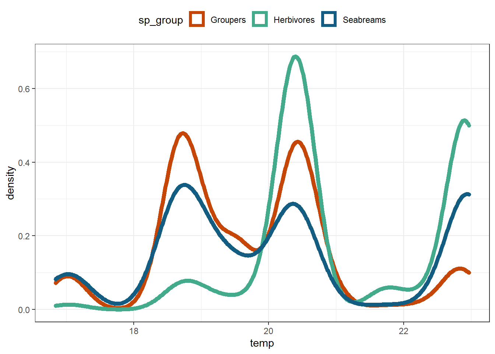
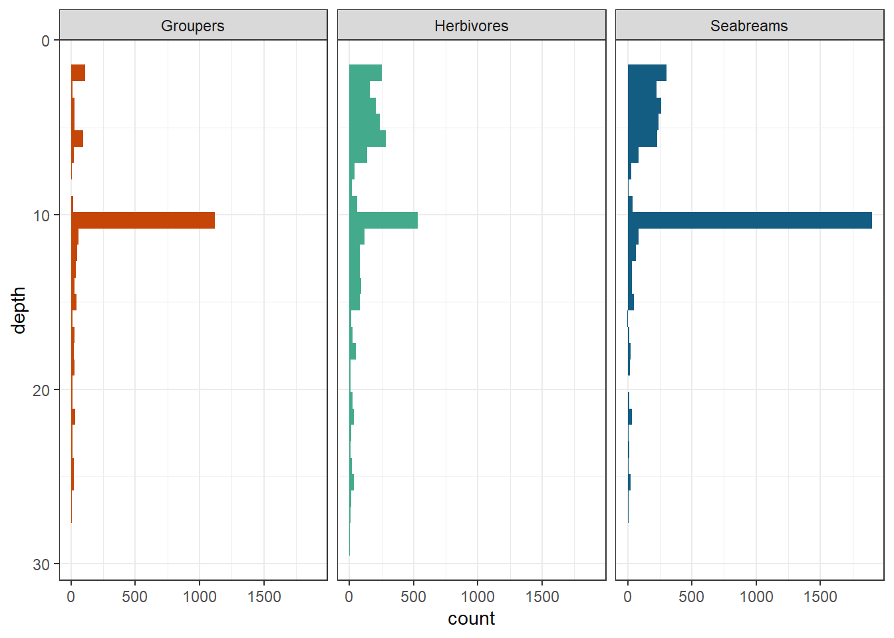
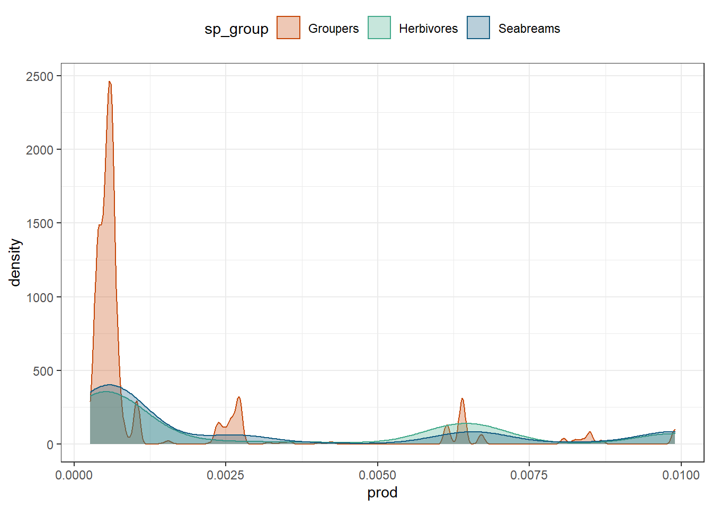

Describing the data
1 Overview of the data used for this research
med_clean is the medata data set after the following treatment:
- filter out presence-absence data.
- categorise
mpato logical by enforcement level. biomasscalculated usingsp.length, which is the individual length recorded (estimated, in cm)- selected relevant columns only and changed some variable names
med_clean <- medata %>%
filter(data.origin != "azz_asi") %>% # presence-absence
mutate(mpa = if_else(enforcement <= 1, FALSE, TRUE),
temp = tmean,
prod = pp_mean,
biomass = (a*sp.length^b)*sp.n) %>%
select(site, lon, lat, trans, species, sp.n, biomass, mpa, temp, depth, prod)head(med_clean)# A tibble: 6 x 11
site lon lat trans species sp.n biomass mpa temp depth prod
<chr> <dbl> <dbl> <dbl> <chr> <dbl> <dbl> <lgl> <dbl> <dbl> <dbl>
1 lampedusa 12.6 35.5 283 Apogon.im~ 1 10.1 FALSE 20.4 2 5.41e-4
2 lampedusa 12.6 35.5 283 Atherina.~ 600 266. FALSE 20.4 2 5.41e-4
3 lampedusa 12.6 35.5 283 Oedalechi~ 75 51.6 FALSE 20.4 2 5.41e-4
4 lampedusa 12.6 35.5 283 Sparisoma~ 1 0.300 FALSE 20.4 2 5.41e-4
5 lampedusa 12.6 35.5 283 Sparisoma~ 9 57.2 FALSE 20.4 2 5.41e-4
6 lampedusa 12.6 35.5 283 Sparisoma~ 3 331. FALSE 20.4 2 5.41e-4Herbivores require another filtering, since we only analyse data from overlapping zones, which is the eastern basin only.
med_clean_east <- medata %>%
filter(country == "Israel" | country == "Greece" | country == "Turkey") %>% # extra filtering - east med
filter(data.origin != "azz_asi") %>% # presence-absence
mutate(mpa = if_else(enforcement <= 1, FALSE, TRUE),
temp = tmean,
prod = pp_mean,
biomass = (a*sp.length^b)*sp.n) %>%
select(site, lon, lat, trans, species, sp.n, biomass, mpa, temp, depth, prod)head(med_clean_east)# A tibble: 6 x 11
site lon lat trans species sp.n biomass mpa temp depth prod
<chr> <dbl> <dbl> <dbl> <chr> <dbl> <dbl> <lgl> <dbl> <dbl> <dbl>
1 assecret~ 25.0 35.4 1 Chromis.c~ 1 7.77e-1 FALSE 20.3 23.5 3.96e-4
2 assecret~ 25.0 35.4 1 Chromis.c~ 4000 4.65e+4 FALSE 20.3 23.5 3.96e-4
3 assecret~ 25.0 35.4 1 Coris.jul~ 2 1.02e+1 FALSE 20.3 23.5 3.96e-4
4 assecret~ 25.0 35.4 1 Coris.jul~ 1 1.02e+1 FALSE 20.3 23.5 3.96e-4
5 assecret~ 25.0 35.4 1 Diplodus.~ 2 1.96e+1 FALSE 20.3 23.5 3.96e-4
6 assecret~ 25.0 35.4 1 Diplodus.~ 2 3.88e+1 FALSE 20.3 23.5 3.96e-42 Formatting data into species matrices
The model we are using (MRFcov) requires data preparations:
- Create a database where each row is a site and the columns contains the metadata, species (column per species) and the predictors.
- Categorical variable - converted to factor with the correct levels.
- Numeric variables - scaled (standardised here, with mean = 1 and standard deviation = 0).
I created a function to create these data sets according to the data I wanted, with filtering to the species I wanted to focus on, the metric (counts/abundance or biomass), and the predictors I wanted to include:
create_spp_mat <- function(dataset, guild, metric, covariate){
cols <- c(c("lat", "lon", "site", "trans", "species"), env_cov, mpa_cov)
if (metric == "sp.n" | metric == "abundance") {
dataset %>%
group_by_at(.vars = cols) %>%
summarise(n = sum(sp.n), .groups = "drop") %>%
spread(species, n, fill = 0) %>%
# Add unique rownames that describe the site and transect:
mutate(loc = make.unique(paste(site, trans, sep = "_"))) %>%
group_by(loc) %>%
column_to_rownames("loc") %>%
filter(!is.na(depth)) %>%
select(all_of(guild), all_of(covariate)) %>%
mutate(across(.cols = all_of(env_cov), .fns = function(x){as.vector(scale(x))})) %>%
ungroup()
} else if(metric == "biomass") {
dataset %>%
group_by_at(.vars = cols) %>%
summarise(n = sum(biomass), .groups = "drop") %>%
spread(species, n, fill = 0) %>%
# Add unique rownames that describe the site and transect:
mutate(loc = make.unique(paste(site, trans, sep = "_"))) %>%
group_by(loc) %>%
column_to_rownames("loc") %>%
filter(!is.na(depth)) %>%
select(all_of(guild), all_of(covariate)) %>%
mutate(across(.cols = c(all_of(guild),all_of(env_cov)), .fns = function(x){as.vector(scale(x))})) %>%
ungroup()
} else {
stop("Metric should be either 'sp.n', 'abundance' or 'biomass'")
}
}2.1 Locations
Code
med_clean %>%
filter(species %in% c(groupers, diplodus, herbivores)) %>%
filter(!is.na(depth)) %>%
distinct(site, trans) %>%
summarise(total_transects = n())# A tibble: 1 x 1
total_transects
<int>
1 1251Code
med_clean %>%
filter(species %in% c(groupers, diplodus, herbivores)) %>%
mutate(sp_group = ifelse(species %in% groupers, "Groupers",
ifelse(species %in% diplodus, "Seabreams", "Herbivores"))) %>%
filter(!is.na(depth)) %>%
group_by(sp_group) %>%
distinct(site, trans) %>%
summarise(total_transects = n())# A tibble: 3 x 2
sp_group total_transects
<chr> <int>
1 Groupers 809
2 Herbivores 894
3 Seabreams 987Code
med_clean %>%
filter(species %in% c(groupers, diplodus, herbivores)) %>%
mutate(sp_group = ifelse(species %in% groupers, "Groupers",
ifelse(species %in% diplodus, "Seabreams", "Herbivores"))) %>%
filter(!is.na(depth)) %>%
group_by(site) %>% distinct(trans) %>%
summarise(total_transects = n())# A tibble: 203 x 2
site total_transects
<chr> <int>
1 achziv 103
2 adrasan 18
3 alonissos 18
4 assecret1210191mlhb_a 1
5 assecret1210191mlhb_b 1
6 assecret1210191scso_a 1
7 assecret1210191scso_b 1
8 assecret1210191scso_c 1
9 assecret1210191smss_a 1
10 assecret1210191smss_b 1
# ... with 193 more rows2.2 Species groups
We selected three groups of species (“guilds”)
dplyr::tibble(Groupers = groupers,
Seabreams = diplodus,
Herbivores = herbivores)# A tibble: 4 x 3
Groupers Seabreams Herbivores
<chr> <chr> <chr>
1 Epinephelus.costae Diplodus.annularis Siganus.rivulatus
2 Epinephelus.marginatus Diplodus.puntazzo Siganus.luridus
3 Serranus.cabrilla Diplodus.sargus Sarpa.salpa
4 Serranus.scriba Diplodus.vulgaris Sparisoma.cretenseWe ran the model on each data set separately. No species with under 10 observations were included.
Code
med_clean %>%
filter(species %in% c(groupers, diplodus, herbivores)) %>%
mutate(sp_group = ifelse(species %in% groupers, "Groupers",
ifelse(species %in% diplodus, "Seabreams", "Herbivores"))) %>%
filter(!is.na(depth)) %>%
arrange(sp_group) %>%
group_by(species) %>%
distinct(site,trans) %>%
summarise(n_observations = n())# A tibble: 12 x 2
species n_observations
<chr> <int>
1 Diplodus.annularis 216
2 Diplodus.puntazzo 105
3 Diplodus.sargus 686
4 Diplodus.vulgaris 796
5 Epinephelus.costae 67
6 Epinephelus.marginatus 164
7 Sarpa.salpa 247
8 Serranus.cabrilla 430
9 Serranus.scriba 543
10 Siganus.luridus 341
11 Siganus.rivulatus 411
12 Sparisoma.cretense 345Code
# ggplot() + aes(x = temp, col = sp_group) + geom_density(size = 2) +
# scale_colour_manual(values = c(guild_colours$grps, guild_colours$herb, guild_colours$dip)) +
# theme_bw() +
# theme(legend.position = "top")2.3 Environmental predictors
env_cov[1] "temp" "depth" "prod" - temp = Temperature
- depth = Depth (suprising…)
- prod = Primary productivity All of these predictors were standardised per analysis.
2.3.1 Temperature
mean annual sea surface temperature (SST) at 9.2 km resolution (Tyberghein et al. 2012). unit: °C
Code
med_clean %>%
filter(species %in% c(groupers, diplodus, herbivores)) %>%
filter(!is.na(depth)) %>%
summarise(min_temp = min(temp),
max_temp = max(temp),
mean_temp = mean(temp))# A tibble: 1 x 3
min_temp max_temp mean_temp
<dbl> <dbl> <dbl>
1 16.8 23.0 20.5Code
med_clean %>%
filter(species %in% c(groupers, diplodus, herbivores)) %>%
filter(!is.na(depth)) %>%
mutate(sp_group = ifelse(species %in% groupers, "Groupers",
ifelse(species %in% diplodus, "Seabreams", "Herbivores"))) %>%
group_by(sp_group) %>%
summarise(min_temp = min(temp),
max_temp = max(temp),
mean_temp = mean(temp))# A tibble: 3 x 4
sp_group min_temp max_temp mean_temp
<chr> <dbl> <dbl> <dbl>
1 Groupers 16.8 23.0 19.8
2 Herbivores 16.9 23.0 21.2
3 Seabreams 16.8 23.0 20.3Code
med_clean %>%
filter(species %in% c(groupers, diplodus, herbivores)) %>%
mutate(sp_group = ifelse(species %in% groupers, "Groupers",
ifelse(species %in% diplodus, "Seabreams", "Herbivores"))) %>%
filter(!is.na(depth)) %>%
ggplot() + aes(x = temp, col = sp_group) + geom_density(size = 2) +
scale_colour_manual(values = c(guild_colours$grps, guild_colours$herb, guild_colours$dip)) +
theme_bw() +
theme(legend.position = "top")
2.3.2 Depth
as recorded during the surveys. unit: meters
Code
med_clean %>%
filter(species %in% c(groupers, diplodus, herbivores)) %>%
filter(!is.na(depth)) %>%
summarise(min_depth = min(depth),
max_depth = max(depth),
mean_depth = mean(depth))# A tibble: 1 x 3
min_depth max_depth mean_depth
<dbl> <dbl> <dbl>
1 1.8 29 9.20Code
med_clean %>%
filter(species %in% c(groupers, diplodus, herbivores)) %>%
filter(!is.na(depth)) %>%
mutate(sp_group = ifelse(species %in% groupers, "Groupers",
ifelse(species %in% diplodus, "Seabreams", "Herbivores"))) %>%
group_by(sp_group) %>%
summarise(min_depth = min(depth),
max_depth = max(depth),
mean_depth = mean(depth))# A tibble: 3 x 4
sp_group min_depth max_depth mean_depth
<chr> <dbl> <dbl> <dbl>
1 Groupers 2 28.2 10.9
2 Herbivores 1.8 29 8.81
3 Seabreams 1.8 29 8.65Code
med_clean %>%
filter(species %in% c(groupers, diplodus, herbivores)) %>%
mutate(sp_group = ifelse(species %in% groupers, "Groupers",
ifelse(species %in% diplodus, "Seabreams", "Herbivores"))) %>%
filter(!is.na(depth)) %>%
ggplot() + aes(x = depth, fill = sp_group) + geom_histogram() +
scale_fill_manual(values = c(guild_colours$grps, guild_colours$herb, guild_colours$dip)) +
scale_x_reverse()+
coord_flip()+
facet_wrap(~sp_group) +
theme_bw() +
theme(legend.position = "none")`stat_bin()` using `bins = 30`. Pick better value with `binwidth`.
2.3.3 Productivity
mean annual primary productivity 9.2 km resolution (Tyberghein et al. 2012). unit: g∙m-3∙day-1.
Code
med_clean %>%
filter(species %in% c(groupers, diplodus, herbivores)) %>%
filter(!is.na(depth)) %>%
summarise(min_prod = min(prod),
max_prod = max(prod),
mean_prod = mean(prod))# A tibble: 1 x 3
min_prod max_prod mean_prod
<dbl> <dbl> <dbl>
1 0.000263 0.00989 0.00272Code
med_clean %>%
filter(species %in% c(groupers, diplodus, herbivores)) %>%
filter(!is.na(depth)) %>%
mutate(sp_group = ifelse(species %in% groupers, "Groupers",
ifelse(species %in% diplodus, "Seabreams", "Herbivores"))) %>%
group_by(sp_group) %>%
summarise(min_prod = min(prod),
max_prod = max(prod),
mean_prod = mean(prod))# A tibble: 3 x 4
sp_group min_prod max_prod mean_prod
<chr> <dbl> <dbl> <dbl>
1 Groupers 0.000263 0.00989 0.00151
2 Herbivores 0.000263 0.00989 0.00319
3 Seabreams 0.000263 0.00989 0.00296Code
med_clean %>%
filter(species %in% c(groupers, diplodus, herbivores)) %>%
mutate(sp_group = ifelse(species %in% groupers, "Groupers",
ifelse(species %in% diplodus, "Seabreams", "Herbivores"))) %>%
filter(!is.na(depth)) %>%
ggplot() + aes(x = prod, col = sp_group, fill = sp_group) + geom_density(alpha = .3) +
scale_fill_manual(values = c(guild_colours$grps, guild_colours$herb, guild_colours$dip)) +
scale_colour_manual(values = c(guild_colours$grps, guild_colours$herb, guild_colours$dip)) +
theme_bw() +
theme(legend.position = "top")
2.4 Anthropogenic predictors
mpa_cov[1] "mpa"We used MPA (logical) as a sole anthropogenic pressure predictor. This predictor tells us about whether or not the sampled area is a Marine Protected Area (MPA) or not, and is determined by the enforcement level.
Code
med_clean %>%
filter(species %in% c(groupers, diplodus, herbivores)) %>%
filter(!is.na(depth)) %>%
distinct(site, mpa) %>%
group_by(mpa) %>%
summarise(SITE_count = n())# A tibble: 2 x 2
mpa SITE_count
<lgl> <int>
1 FALSE 193
2 TRUE 13Code
med_clean %>%
filter(species %in% c(groupers, diplodus, herbivores)) %>%
filter(!is.na(depth)) %>%
distinct(site, trans, mpa) %>%
group_by(mpa) %>%
summarise(TRANSECT_count = n())# A tibble: 2 x 2
mpa TRANSECT_count
<lgl> <int>
1 FALSE 902
2 TRUE 3492.5 Prepared data
grps_mat <- create_spp_mat(dataset = med_clean, guild = groupers, metric = "sp.n", covariate = all_covs)
dip_mat <- create_spp_mat(dataset = med_clean, guild = diplodus, metric = "sp.n", covariate = all_covs)
herb_mat <- create_spp_mat(dataset = med_clean_east, guild = herbivores, metric = "sp.n", covariate = all_covs)
head(grps_mat) Epinephelus.costae Epinephelus.marginatus Serranus.cabrilla
gdor_1562 0 0 0
gdor_1563 0 0 0
gdor_1564 0 0 0
gdor_1565 0 0 0
gdor_1566 0 0 0
gdor_1567 0 0 0
Serranus.scriba temp depth prod mpa
gdor_1562 0 1.228003 -0.8010765 2.061776 TRUE
gdor_1563 0 1.228003 -1.0065244 2.061776 TRUE
gdor_1564 0 1.228003 -0.4929046 2.061776 TRUE
gdor_1565 0 1.228003 -1.3146962 2.061776 FALSE
gdor_1566 0 1.228003 -0.6572630 2.061776 FALSE
gdor_1567 0 1.228003 -0.6572630 2.061776 FALSEhead(dip_mat) Diplodus.annularis Diplodus.puntazzo Diplodus.sargus
gdor_1562 0 0 5
gdor_1563 1 0 4
gdor_1564 0 0 7
gdor_1565 0 0 2
gdor_1566 0 0 4
gdor_1567 0 0 0
Diplodus.vulgaris temp depth prod mpa
gdor_1562 11 1.228003 -0.8010765 2.061776 TRUE
gdor_1563 0 1.228003 -1.0065244 2.061776 TRUE
gdor_1564 2 1.228003 -0.4929046 2.061776 TRUE
gdor_1565 0 1.228003 -1.3146962 2.061776 FALSE
gdor_1566 0 1.228003 -0.6572630 2.061776 FALSE
gdor_1567 0 1.228003 -0.6572630 2.061776 FALSEhead(herb_mat) Siganus.rivulatus Siganus.luridus Sarpa.salpa Sparisoma.cretense
gdor_1562 10 0 0 0
gdor_1563 6 0 0 0
gdor_1564 29 0 0 0
gdor_1565 5 0 0 0
gdor_1566 5 0 0 0
gdor_1567 11 0 0 0
temp depth prod mpa
gdor_1562 0.8413704 -0.7703809 1.538865 TRUE
gdor_1563 0.8413704 -0.9474875 1.538865 TRUE
gdor_1564 0.8413704 -0.5047208 1.538865 TRUE
gdor_1565 0.8413704 -1.2131475 1.538865 FALSE
gdor_1566 0.8413704 -0.6464062 1.538865 FALSE
gdor_1567 0.8413704 -0.6464062 1.538865 FALSE